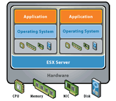
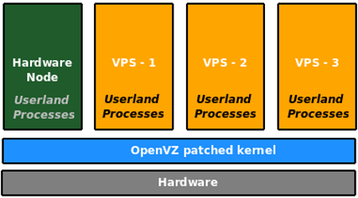
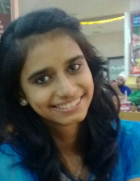

Basics of Virualization February 28, 2017 by Priyanka Maru This article basically gives you information regarding Viruatization,it’s constrainsts and it’s types. In computing, virtualization refers to the act of creating a virtual (rather than actual) version of something, including virtual computer hardware platforms, operating systems, storage devices, and computer network resources..Virtualisation means the simulation of computer system, in software. The virtualisation software creates an environment for a guest, a complete OS, to execute within this created world. This means the view that should get exported to the guest should be of a complete computer system with the processor, system peripherals, devices, buses, memory and so on. The virtualisation software can be strict about what view to export to the guest, for example, the processor and processor features, types of devices, buses exported to the guest, etc, or it can be flexible with the user getting a choice to select individual components and parameters. There are some constraints to create a virtualised environment or a set of sufficient requirements, as it has been noted by Popek and Goldberg in their paper on virtual machine monitors. Fidelity Software running in a virtualised environment should not be able to detect it is running on a virtualised system. Containment Activities within a virtual machine (VM) should be contained within the VM itself without disturbing the host system. A guest should not cause the host or other guests running on the host to malfunction. Performance Performance is crucial to how the user sees the utility of the virtualising environment. In this age of extremely fast and affordable general-purpose computer systems, if it takes a few seconds for some input action to get registered in a guest, no one will be interested in using the virtual machine at all. Stability The virtualisation software itself should be stable enough to handle the guest OS and any quirks it may exhibit. There are several reasons why one would want virtualisation. For data centres, it makes sense to run multiple servers (Web, mail, etc,) on a single machine. These servers are mostly under-utilised, so clubbing them on one machine with a VM for each of the existing machines enables fewer machines, less rack space and lower electricity consumption. Types of Virtualization Hardware virtualization Hardware virtualization or platform virtualization refers to the creation of a virtual machine that acts like a real computer with an operating system. Software executed on these virtual machines is separated from the underlying hardware resources. For example, a computer that is running Microsoft Windows may host a virtual machine that looks like a computer with the Ubuntu Linux operating system; Ubuntu-based software can be run on the virtual machine. Desktop virtualization Desktop virtualization is the concept of separating the logical desktop from the physical machine. One form of desktop virtualization, virtual desktop infrastructure (VDI), can be thought of as a more advanced form of hardware virtualization. Rather than interacting with a host computer directly via a keyboard, mouse, and monitor, the user interacts with the host computer using another desktop computer or a mobile device by means of a network connection, such as a LAN, Wireless LAN or even the Internet. In addition, the host computer in this scenario becomes a server computer capable of hosting multiple virtual machines at the same time for multiple users. Nested virtualization Nested virtualization refers to the ability of running a virtual machine within another, having this general concept extendable to an arbitrary depth. In other words, nested virtualization refers to running one or more hypervisors inside another hypervisor. Nature of a nested guest virtual machine does not need not be homogenous with its host virtual machine; for example, application virtualization can be deployed within a virtual machine created by using hardware virtualization Now is a good time to get acquainted with some of the terms related to virtualization: VM : virtual machine VMM : virtual machine monitor Guest OS : the OS that is run within a VM Host OS :the OS that runs on the physical computer system and hosts guests Paravirtualised guest : the guest OS that is modified to have the knowledge of a VMM. Full virtualisation : the guest OS is run unmodified in this environment. Hypervisor : an analogous term for a VMM. Hypercall : infrastructure, via which a paravirtualised guest and the VMM communicate. Types of VMM There are several virtual machine monitors available. They differ in various aspects like scope, motivation, and method of implementation. A few types of monitor software are: Native hypervisors: These VMMs have an OS associated with them. A complete software-based implementation will need a scheduler, a memory management subsystem and an IO device model to be exported to the guest OS. Examples are: VMWare ESX server, Xen, KVM, and IBM mainframes. In IBM mainframes, the VMM is an inherent part of the architecture.  Containers: In this type of virtualisation, the guest OS and the host OS share the same kernel. Different namespaces are allocated for different guests. For example, the process identifiers, file descriptors, etc, are virtualised in the sense that a PID obtained for a process in the guest OS will only be valid within that guest. The guest can have a different userland (for example, a different distribution) from the host. Examples are OpenVZ, FreeVPS and Linux-Vserver.  Emulation: Each and every instruction in the guest is emulated. It is possible to run code compiled for different architectures on a compute.for example, running ARM code on a PowerPC machine. Other examples are qemu and pearpc. qemu supports multiple CPU types, and it runs ARM code under x86 as well as x86 under x86, whereas pearpc only emulates the PPC platform.  Priyanka Maru Spend your whole life waiting for the storm and miss out on enjoying the sunshine.